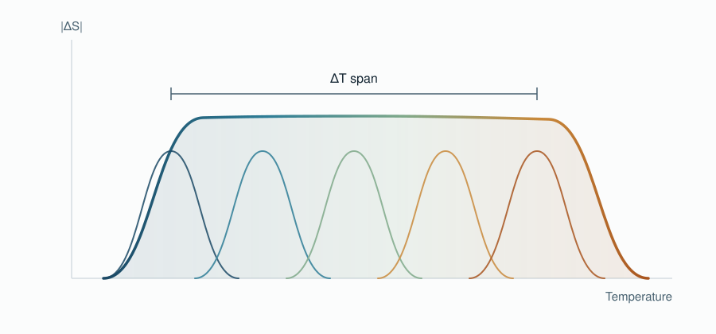

Kick-off meeting
The three subprojects met online to agree on the working methods for the next three years: shared equipment inventory, a single data repository, rotating responsibility for open-access charges, and the first joint research task.
Refrigeration runs on compressing gases that damage the atmosphere. Some metals warm up when a magnet comes near and cool down when it leaves. MAGCOOLEST builds alloys whose composition changes gradually along the material, so that this effect works across a wide range of temperatures instead of a narrow one — and uses the same physics in reverse, turning low-grade heat and vibration into electricity.

First-principles calculations, molecular dynamics and machine learning narrow down which iron-, nickel- and manganese-based compositions are worth synthesising, so that laboratory time goes into the promising ones.
By controlling composition and microstructure across a single piece, the transition temperature varies from one end to the other. Several transitions in cascade widen the useful operating range well beyond what a uniform material gives.
The best compositions are turned into printable powders and inks, additively manufactured into heat exchangers, and tested in working demonstrators for refrigeration and for energy harvesting.


Air conditioning alone accounts for roughly 6 % of energy use in the United States and 3 % in the European Union, with about 170 million tonnes of CO2 emitted each year. Conventional cooling depends on refrigerant gases that deplete ozone or trap heat. Caloric refrigeration uses no gases at all, is quieter, more compact, and prototypes already exceed 60 % of the Carnot limit against about 40 % for the best commercial compressors.
The catch is the material. Today's magnetic refrigerators rely on gadolinium, a scarce and expensive critical raw material. MAGCOOLEST works on alloys that use little or none of it.
The three subprojects met online to agree on the working methods for the next three years: shared equipment inventory, a single data repository, rotating responsibility for open-access charges, and the first joint research task.